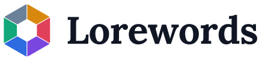
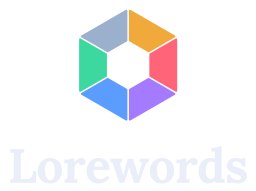
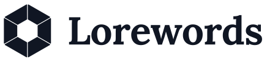
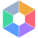
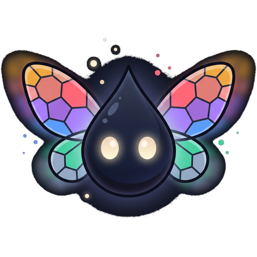

Aprenda inglês pelas cartas que você já ama jogar.
Guia de identidade visual — v1.0. O sistema se chama Seis Tintas: as seis cores de tinta do jogo viram seis papéis funcionais na interface. Nada de decoração solta — cada cor significa uma coisa e só uma.
01 — Marca
Logo
O símbolo é uma rosácea hexagonal de vitral: seis facetas, uma por tinta, em volta de um vazio central — a "página em branco" que o estudo preenche. Ele é 100% original: não usa, imita nem deriva de nenhuma marca de terceiros.




Faça
- Respeite uma margem livre igual à altura de uma faceta em volta do logo.
- Tamanho mínimo: 24 px de altura para o símbolo, 120 px de largura para o horizontal.
- Em fundos coloridos ou fotos, use a versão monocromática.
- Use o favicon (sem vãos) abaixo de 32 px — a versão com vãos entope.
Não faça
- Não recolora as facetas fora da paleta oficial.
- Não aplique sombra, contorno, bisel ou gradiente no símbolo.
- Não estique, incline nem gire o logo.
- Não recrie o wordmark digitando "Lorewords" — use sempre o SVG (já vetorizado).
02 — Cor
As seis tintas
Cada tinta tem um papel na interface. Se você precisar de uma cor para algo novo, primeiro pergunte de qual desses papéis aquilo se aproxima — não invente a sétima tinta.
Superfícies e texto
Contraste verificado
| Token | Sobre --bg | Sobre --surface | WCAG |
|---|---|---|---|
| --text | 16,7:1 | 15,4:1 | AAA |
| --text-muted | 8,0:1 | 7,4:1 | AAA |
| --text-faint | 4,4:1 | 4,0:1 | AA grande / decorativo |
| --ink-amber | 9,7:1 | 9,0:1 | AAA |
| --ink-ruby | 6,8:1 | 6,3:1 | AA |
| --ink-amethyst | 6,3:1 | 5,8:1 | AA |
| --ink-sapphire | 7,1:1 | 6,5:1 | AA |
| --ink-emerald | 10,7:1 | 9,8:1 | AAA |
| --ink-steel | 8,8:1 | 8,1:1 | AAA |
Texto --text-on-ink (#0A0D14) sobre qualquer tinta preenchida fica entre 6,3:1 e 10,7:1 — todos passam AA.
Nunca use cor sozinha para indicar acerto ou erro: acompanhe sempre de ícone ou texto.
Gradiente de assinatura
--gradient-inks — use com moderação: barra de topo, brilho de fundo desfocado,
borda de conquista. Nunca atrás de texto.
03 — Tipografia
Lora + Inter
Lora (serifa caligráfica) carrega o clima de manuscrito iluminado; Inter cuida de tudo que é funcional. A palavra em inglês sempre em Lora, a tradução em português sempre em Inter — a diferença de forma ajuda o cérebro a separar os idiomas.
04 — Componentes
Peças da interface
Botões
Uma única ação primária por tela. "Não sabia" e "Eu sabia" começam suaves (fundo tintado) e só ficam sólidos no hover — assim o card não vira um semáforo piscando.
Selos de estado
Barras de progresso
A trilha vazia usa --surface-3, nunca branco.
Números com tabular-nums para não dançarem ao atualizar.
05 — Imagens
Arte de apoio
Três peças geradas para a marca (Gemini / Nano Banana), na pasta imagens/.
Todas são originais e não derivam de arte de terceiros.
opacity:.5 e um gradiente
escuro por cima do lado esquerdo.
opacity:.6.06 — Voz
Como o Lorewords fala
Sim
- Direto e curto: "Vire o card", "Você errou 3 vezes essa".
- Vocabulário de jogo quando ajuda: baralho, sessão, tinta.
- Elogio específico: "12 palavras novas hoje" > "Mandou bem!".
- Erro sem drama: "Ainda não. Ela volta daqui a pouco."
Não
- Gritar em caixa alta ou empilhar emoji.
- Gamificação culpada: "Você perdeu sua ofensiva!".
- Jargão de SRS na cara do usuário ("intervalo E-Factor 2.5").
- Fingir que é um produto oficial de algum TCG.
07 — Cuidado importante
Marcas de terceiros
Lorewords é uma marca independente. A identidade acima — símbolo, wordmark, paleta e tipografia — foi desenhada do zero e não deriva de nenhum logo, arte ou elemento gráfico de terceiros. As seis tintas são inspiradas em um conceito de regra do jogo (nomes de cores), não em arte protegida.
Ao publicar o site, vale seguir estas precauções:
- Não use "Lorcana", "Disney" nem logos oficiais no nome do site, no domínio, no logo ou no favicon.
- Pode mencionar o jogo em texto descritivo ("vocabulário das cartas de Disney Lorcana") — isso é uso nominativo.
- Inclua um rodapé de isenção: "Lorewords é um projeto de fãs, sem vínculo com a Disney ou a Ravensburger. Todas as marcas e artes das cartas pertencem aos seus donos."
- Imagens de cartas: use a API pública que você já usa, mostre-as como referência dentro do estudo e não as redistribua em downloads nem venda nada em cima delas.
- Se um dia monetizar, converse com um advogado antes — projeto de fã sem fins lucrativos e produto pago são situações bem diferentes.
Isso é orientação geral de bom senso, não parecer jurídico.